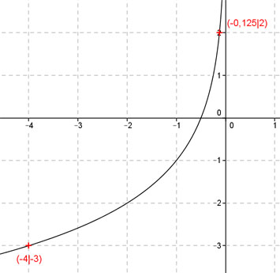

Aufgabe 91 Ergänzen Sie die Wertetabelle für den Graphen: y = -3 * lg8-2x x -4 -0,125 y -3 2 f(-0,125) = -3 * lg8(-2(-0,125)) f(-0,125) = -3 * lg80,25 --> lg8 0,25 --> 8z = 0,25 Logarithmieren: lg 8z = lg 0,25 z * lg 8 = lg 0,25 |:lg 8 lg 0,25 - 0,6020 z = ---------- = ---------- = -0,67 lg 8 0,9030 y = -3 * z = -3 * (-0,67) = 2 gerundet f(x) = -3 eingesetzt : -3 = -3 * lg8-2x |:(-3) 1 = lg8 -2x --> -2x = 81 |:(-2) x = -4 